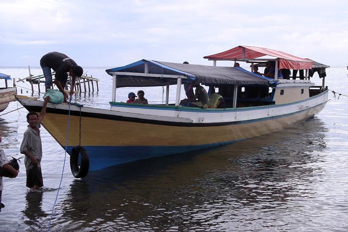

Indonesia Trav-E-Logs ©
Wairiang to Kalabahi
|  | |
| back: Natal & Idul Adha | Transport from Wairiang to Kalabahi. |
================================= Alor and Pantar are the two main islands of the Alor archipelago. Kalabahi, on Alor, is the administrative center of the archipelago. Pantar is so remote it has only one town, but many dialects developed among the various villages due to the separation caused by the rugged landscape. =================================
January, 10, 2007
|
Early in the morning of the fifth day in Wairiang, the losemen owner advise me the boat to Kalabahi is here, so a hasty walk is made to the "port" to check the condition of the boat. The biggest surprise of the day is seeing that the narrow-beamed wooden boat looks seaworthy. It appears the boat will leave in less than an hour, giving me little time to eat and buy a snack for the journey. The boat gets underway at low tide so it takes a while to make our way to deep water. Less than 20 on board a craft that probably carries double that in good weather also means we are not overloaded. A quick glance at the horizon to the west tells me the weather is beginning to deteriorate. Just my luck; four lovely days of waiting for the boat and it arrives with the wind and weather. At present, the rain is behind us, and the winds have not picked up yet. The skipper hugs the shoreline as he heads . I'm relieved to see the storm clouds fade in the distance. In just thirty minutes we start crossing the Straits of Alor -- which is our longest stretch of open water. Our luck holds out, as the worst we get is a brief shower coming off Pantar Island. As we get within a few miles of Pantar, the coral reefs start. For the next several hours, the boat travels along the length of the island and I can't take my eyes off the water, as it is clear the whole island is ringed with coral along the north shore. This has got to be a fantastic diving/snorkeling area, and the only way to do that would be from a private boat. Along the entire north coast, very few signs of life are spotted. Then at the eastern end, some four hours after leaving port, we approach the shore to let a passenger off at a small village. It is written that the terrain on Pantar is so rugged, no roads have been built connecting the only town, Baranusa, with any of the villages. Approaching another small island on the journey we watch the sea in front of us erupt with dolphins -- hundreds of them. This time, however, they do not provide escort service as on the trip to the Togeans in December. Finally we round the tip and start across the Straits of Pantar. This is treacherous water where whirlpools are sometimes caused by the strong currents rushing between the Sawu and Flores Seas. Our skipper keeps us in quiet waters as we make the crossing. Eventually we turn into Kalabahi bay. The sight of huge structures to handle fishing nets means we all can relax in these calm waters for the last hour of the journey. First item of business in Kalabahi is finding the Pelni office and book passage on the Tatamailau to Kupang, as the ship is scheduled to leave this evening. When the ticket window opens, I indicate "second class", and immediately the door to the office is opened. More good news -- the ship is close to on-schedule, and will be here tonight. After purchasing passage, the employees are kind enough to permit storage of my backpack for the next three hours. Now is the perfect time to order a sit-down meal to make up for the brief breakfast and missed lunch, as it's approaching dinnertime. |
Island-village near the mouth of Pantar Straits. Structure for fishing nets in Kalabahi Bay. Pelni ticket for Kupang and obligatory insurance coupon. The atmosphere in Kalabahi is congenial, making me wish more time could spent in the Alor Archipelago. But the next connection to Timor won't happen until after my Indonesian visa expires. So many places, so little time on these visas.... Bill ------------------------------ Email me at: "juno.com" preceded by an "@" and "dancer2SEAsia" "The backpacker discovers all people are beautiful -- it's the Governments that are evil." |
Mark-up of Lonely Planet map with my travel path.
| jump to: Timor Leste | jump to: Labuan Bajo - Ruteng Road | soon: Kupang, Timor Barat |
| back: Natal & Idul Adha |